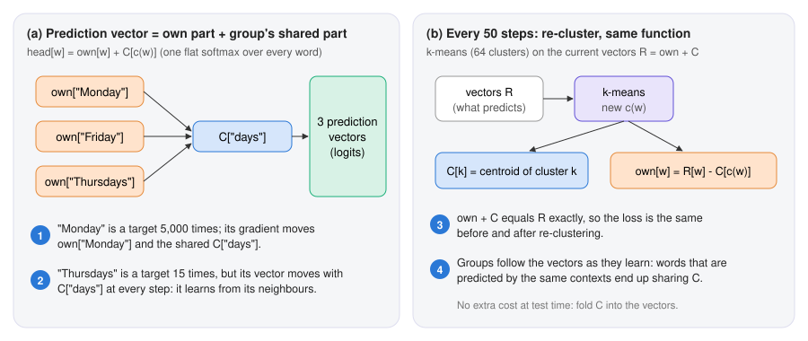
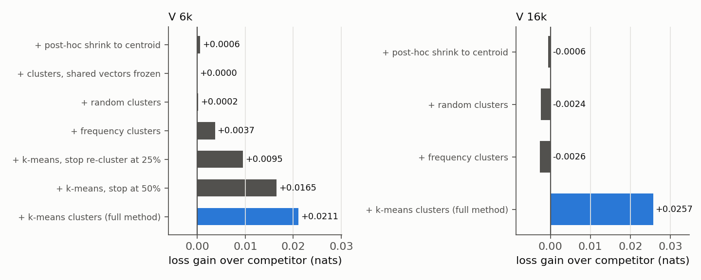
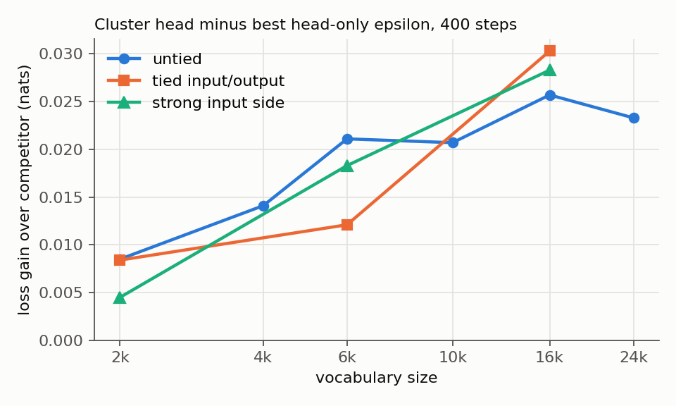
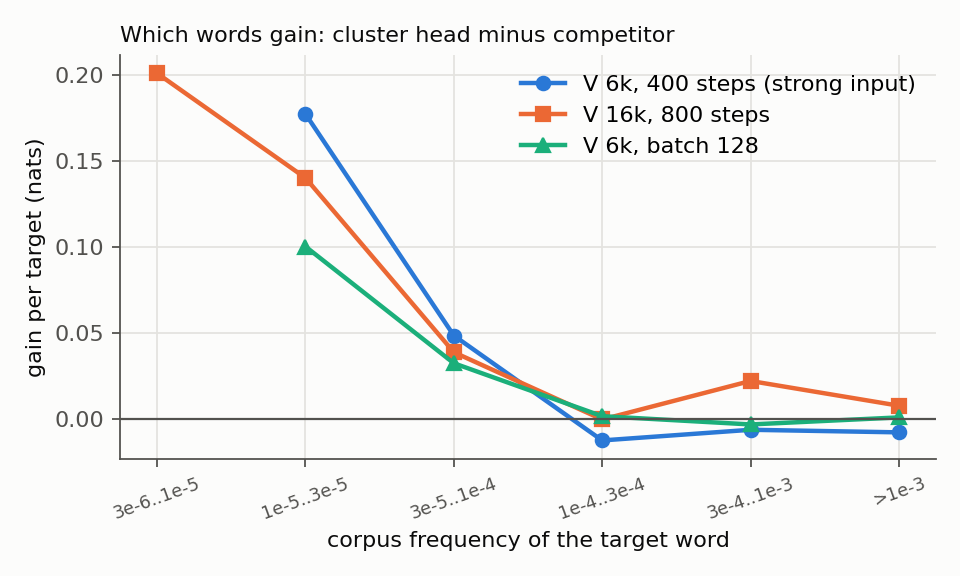
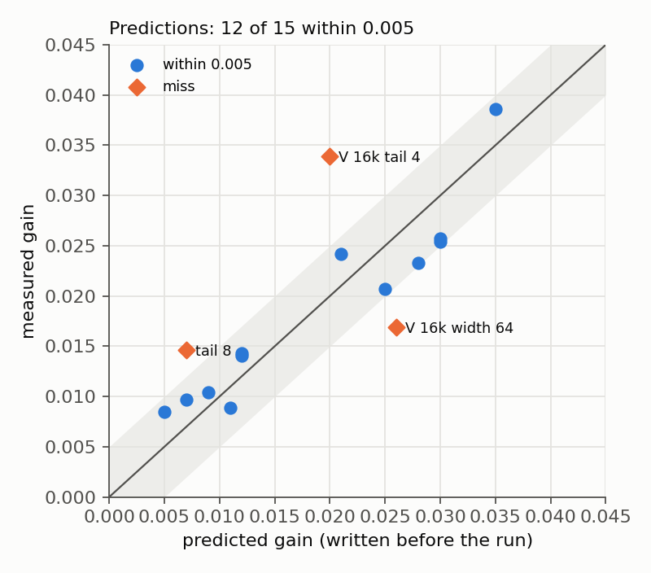
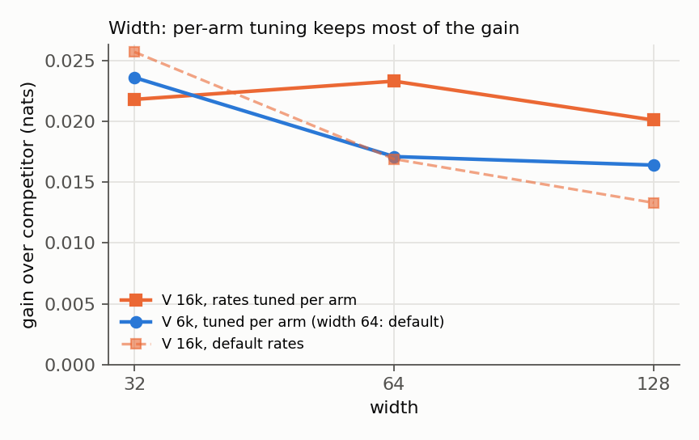
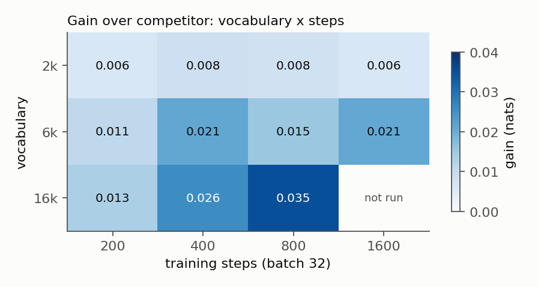
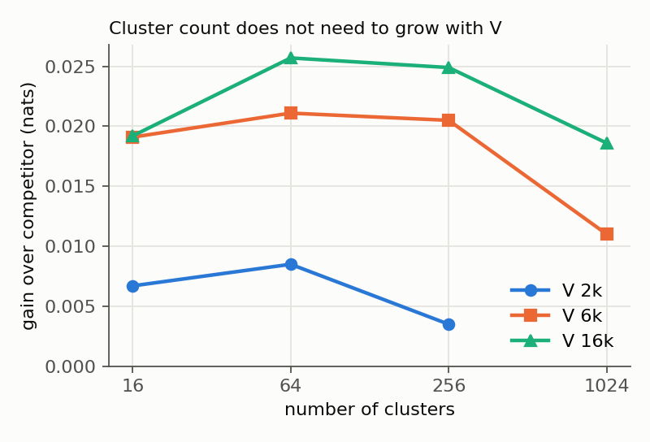
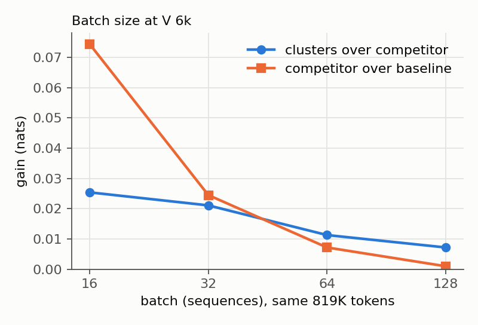

AI conference paper setup by Vuk Rosić. The idea is judged to be novel, and with further work it may be submitted to a top AI conference.
In one sentence: in a language model's last layer each word has a vector that the model compares against to pick the next word; we let similar words share part of that vector, with groups the model finds itself from those vectors and redraws during training, and this helps rare words more than fixed groups or a tuned optimizer setting.
A rare word such as "Therefore" learns faster when it shares part of its vector with "However" and "After", and the model itself should decide which words go together. A language model predicts the next word by scoring one vector per vocabulary word in its last layer, and a word's vector learns mainly when that word is the answer, so rare words stay undertrained. Earlier work let such words share a vector with words of the same morpheme, spelling or part of speech, with groups fixed before training. We split each word's vector into its own part plus a part shared with its group, find the groups by k-means on the current vectors, and redraw them every 50 steps without changing any prediction. On small models, fixed groups by frequency or at random give nothing, while learned groups beat a tuned baseline and a tuned output-layer Adam epsilon. The gain sits on rare words seen at least about ten times in training, grows with vocabulary and training length, shrinks at large batches, and costs nothing at test time.
In simple words. In its last layer, a language model keeps one learned vector for every word it can predict; it compares its current state with each of these vectors to pick the next word, and a word's vector improves only when that word shows up as the answer. A rare word like "Therefore" shows up a handful of times, so its vector barely learns. Earlier work helped such words by letting them share a piece with words that have the same ending or the same part of speech, set before training. We let the model choose the groups itself: every 50 steps it puts words whose vectors look alike into the same group, so "Therefore" ends up with "However" and "After" and learns from every lesson they get, much like a new student placed in a study group by how they actually work rather than by their surname. At the end the shared parts are folded back in, so the finished model is the same size and speed.

A language model ends with an output layer. It is a table with one vector for each word in the vocabulary. To predict the next word, the model takes the dot product of each of these vectors with its current hidden state and turns these scores into probabilities. We call the vector of word w its prediction vector. Validation loss measures how well it predicts held-out text; lower is better.
A prediction vector gets its main gradient only when its word is the correct next word. Common words are the answer thousands of times per run. Rare words are not. In our vocabulary-16,000 setting, a word that makes up 2 of every 100,000 words of text is the answer about 16 times in a 400-step run. Its prediction vector barely leaves its random start. At vocabulary 6,000, the tuned model scores rare targets only 0.94 nats better than a model that knows nothing but word frequency.
The best fix we found in existing practice is a larger Adam epsilon on the output layer alone: 1e-5 to 3e-5 instead of 1e-8. Adam divides each step by the size of recent gradients plus epsilon. A rare word's prediction vector has a tiny gradient history, so a larger epsilon keeps its step from being blown up by noise. This competitor lowers loss at vocabulary 16,000 from 5.9720 to 5.8905. It is a strong, cheap baseline, and we compare against it everywhere.
Sharing is the other known fix. Botha and Blunsom (2014) wrote each output vector as the word's own vector plus vectors of its morphemes, and perplexity on words seen fewer than 100 times fell by 8-21%. He et al. (2015) built output vectors from character vectors, and Syntactic Smoothing (Diehl Martinez et al. 2024) spreads the learning signal over tokens with the same part of speech. So it is known that rare words learn from similar words through a shared part, and that the gain lands on rare words. In all of these the groups are fixed before training, by spelling or by grammar.
We ask whether the groups should instead come from the model itself. Words that the model predicts in the same contexts end up with similar prediction vectors. " Therefore" is rare in our data, but its prediction vector comes to sit near " However" and " After", which are common. We find the groups by k-means on the current prediction vectors and redraw them every 50 steps. Each redraw moves the group mean into the shared part and the rest into the word's own part, so every prediction vector, and every prediction, stays exactly the same.
The finding is one rule: share part of the prediction vector inside groups found from the model's own prediction vectors, and keep the groups current. Four claims support it.
| # | Claim | Section |
|---|---|---|
| 1 | Groups found by k-means on the current prediction vectors, and redrawn during training without changing the outputs, carry the gain; stopping or slowing the redraws loses it | 4 |
| 2 | Fixed groups, the Botha-style setting, give no gain here: frequency groups +0.004 and random groups 0.000, against +0.021 for learned groups | 4 |
| 3 | Learned groups beat a tuned head-only Adam epsilon, the strongest competitor, by 0.016-0.039 at vocabularies of 6,000-24,000 | 5 |
| 4 | The gain needs rare words seen at least about 10 times, and it grows with vocabulary and training length | 6 |
The output table R holds V prediction vectors of width d, one per word. We store it as two parameters. own holds V vectors, one per word. C holds K = 64 vectors, one per group. A list c gives each word's group. The prediction vector the model uses for word w is R[w] = own[w] + C[c[w]].
def head(self): # prediction vectors used for the scores
return self.own + self.C[self.c]
@torch.no_grad()
def regroup(self, iters=10): # every 50 steps
R = self.head()
self.c = kmeans(R, K=64, iters=iters, init=self.c)
for k in range(64):
self.C[k] = R[self.c == k].mean(0)
self.own.copy_(R - self.C[self.c]) # same vectors, same model
reset_adam_state(self.C)
own trains with the output layer's usual Adam settings. C has its own Adam rate, 0.02 at width 32. After training, own + C[c] is added into one table, so the finished model is a plain model.
Why it should work. This is the same reason shared morpheme vectors help (Botha and Blunsom 2014). The gradient of a shared vector is the sum of the gradients of all prediction vectors in its group. Take " Therefore". It is the answer 14 times in a 400-step run at vocabulary 6,000. Its group also holds " However", " After", " These" and " There", which are the answer hundreds of times. Each time one of them is the answer, the group's shared vector moves toward contexts that start a new clause, and so does the prediction vector of " Therefore". Its own part still learns what is special about " Therefore". The same holds in reverse: a gradient that pushes " However" down when the answer is something else also pushes " Therefore" down, which is right, since both are wrong in that context.
Why redraw. At the start all prediction vectors are random, so the first groups are random. As they train, words that are predicted in the same contexts move together. Redrawing the groups lets them follow this. Each redraw moves the group mean into C and the rest into own, so nothing the model predicts changes at that step.
What the groups look like. After 400 steps at vocabulary 6,000, most groups collect words with the same grammatical role. Seen counts are how many times the run trained on the word as the answer.
| Common members | Rare members (seen count) |
|---|---|
| " However", " After", " These", " There" | " Therefore" (14), " Thus" (24), " Though" (13), " Yet" (18) |
| " create", " learn", " build", " ensure" | " establish" (13), " expand" (25), " register" (13), " hide" (13) |
| " done", " seen", " given", " taken" | " claimed" (25), " arrested" (22), " accused" (21), " dropped" (22) |
| " family", " house", " friends", " career" | " shoulder" (19), " dad" (18), " birthday" (21), " finger" (14) |
| " What", " How", " Is", " Do" | " Where" (28), " Did" (31), " Does" (27), " Was" (22) |
Some groups also collect word pieces such as "ition" and "ious", which share the role of ending a word.
The model is a small modern transformer: RMSNorm, rotary positions, QK-norm and SwiGLU, with separate input and output tables. The default is width 32, 2 layers, 2 heads, sequences of 64 tokens, batch 32 and 400 steps, which is 819,200 training tokens, each read once. The text is FineWeb with the GPT-2 tokenizer. The vocabulary is the V most frequent GPT-2 tokens plus one token for everything else. Most of these tokens are whole words with a leading space, so we call them words. Block weights train with Muon at rate 0.02. The tables train with Adam: input table 0.05, output table 0.1, beta2 0.95. The rate cools down over the last 30% of steps. Validation uses 600 held-out sequences.
We compare three arms:
| Arm | What it is |
|---|---|
| B | tuned baseline, with the output-table rate swept from 0.05 to 0.2 |
| E | B with output-only Adam epsilon 1e-5 or 3e-5, the best of a sweep; the competitor |
| CE | E plus prediction vectors shared within learned groups; this method |
Each arm gets its own sweep of output-table rate and epsilon. CE also gets a sweep of the shared-vector rate. We swept the Muon rate (0.01, 0.02, 0.04) and the input-table rate (0.05, 0.1) for both E and CE; 0.02 and 0.05 are best for both. We also tried other published fixes at vocabulary 6,000, and all were worse than the baseline's 5.0177: Coupled Adam 5.0981, a class-based softmax 5.026, an adaptive softmax 5.033, and output beta2 0.99 5.0057. The study logs 249 runs. The median run takes 36 seconds on a laptop GPU.
Earlier sharing methods fix the groups before training (Botha and Blunsom 2014; He et al. 2015; Diehl Martinez et al. 2024). We test fixed groups directly by keeping everything else the same: the same shared vectors, the same rates, the same 64 groups, but with members chosen by frequency or at random and never redrawn. We also test whether the redraws matter, whether the shared vectors must learn, and whether pulling finished prediction vectors together after training (Khassanov et al. 2019) gives the same effect.
| Arm (V 6,000, epsilon 1e-5) | val loss | gain over E |
|---|---|---|
| E (competitor) | 4.9931 | 0 |
| CE: k-means groups, redrawn every 50 steps | 4.9720 | 0.021 |
| fixed random groups | 4.9929 | 0.000 |
| fixed groups by word frequency | 4.9894 | 0.004 |
| shared vectors frozen (rate near zero) | 4.9931 | 0.000 |
| redraws stop after 25% / 50% of training | 4.9836 / 4.9766 | 0.010 / 0.017 |
| redraw every 25 / 100 / 200 steps | 4.9755 / 4.9770 / 4.9812 | 0.018 / 0.016 / 0.012 |
| no sharing; after training, pull each prediction vector toward its k-means centre (best strength) | 4.9925 | 0.001 |

Fixed random groups have exactly the same parameters as the method and give nothing, so extra parameters are not the cause. Fixed frequency groups put rare words together, but rare words with different roles do not share anything useful, and the gain is 0.004. Learned groups put rare words with the common words they behave like (Section 2), and the gain is 0.021. We did not test fixed morpheme groups, because GPT-2 tokens are not split into morphemes; that comparison is the most direct one left (Section 9). At vocabulary 16,000, random groups (5.8969) and frequency groups (5.8971) are even slightly worse than the competitor (5.8945), while the method reaches 5.8688.
Pulling prediction vectors toward their neighbours after training gains 0.001 over the competitor and 0.001 over the baseline. So the gain is not a smoothing of finished vectors. The sharing has to happen while the vectors learn, because that is when a rare word's vector can borrow its neighbours' updates.
The groups must also stay current (Claim 1). Stopping redraws early, or redrawing rarely, loses part of the gain. The number of groups matters little: 16, 64 and 256 groups give 4.9740, 4.9720 and 4.9726. At 1,024 groups (about 6 words each) the gain falls to 0.011, because each group has few common members to borrow from.
A larger output-only Adam epsilon already gives the prediction vectors of rare words bigger steps, so any sharing method must beat it, not just a plain baseline. We ran vocabularies from 2,000 to 24,000 and runs from 200 to 1,600 steps, with each arm at its best setting.
| Setting | B | E (competitor) | CE (this method) | E - CE |
|---|---|---|---|---|
| V 2,000, 400 steps | 3.9459 | 3.9383 | 3.9288 | 0.009 |
| V 6,000, 400 steps | 5.0177 | 4.9931 | 4.9695 | 0.024 |
| V 10,000, 800 steps | 5.3350 | 5.2723 | 5.2481 | 0.024 |
| V 16,000, 400 steps | 5.9720 | 5.8905 | 5.8687 | 0.022 |
| V 16,000, 800 steps | 5.7989 | 5.6964 | 5.6612 | 0.035 |
| V 24,000, 800 steps | 6.1333 | 5.9971 | 5.9585 | 0.039 |
| V 6,000, 1,600 steps | 4.7503 | 4.7119 | 4.6909 | 0.021 |

Learned groups beat the competitor by 0.016-0.039 at every vocabulary from 6,000 to 24,000, with each arm at its own best rates.
The gain does not depend on details of the model. With tied input and output tables it is 0.017 at vocabulary 6,000 and 0.030 at 16,000. With a stronger input side (token smearing and value-embedding tables) it is 0.018 and 0.028. With 4 layers instead of 2 it is 0.021 at vocabulary 16,000.
At vocabulary 2,000 the gain is 0.009, below our bar of 0.01. Nearly every word in a 2,000-word vocabulary is common, so few prediction vectors need help.
Botha and Blunsom (2014) already showed that shared vectors help rare words most. With learned groups there is a lower limit as well. A word seen only once or twice cannot be placed in the right group, because its prediction vector has not moved from random. So the gain should sit on words that are rare but seen often enough to be grouped, and it should grow with anything that adds such words or adds training time.
We split validation targets into bands by how common the word is in the corpus, and measured the loss on each band. The table shows vocabulary 16,000 at 800 steps. "Share" is the fraction of all validation targets in the band; "contribution" is the gain times the share, and the contributions add up to the total gain.
| Corpus frequency of the word | Share of targets | E | CE | Gain per target | Contribution |
|---|---|---|---|---|---|
| 3e-6 to 1e-5 | 0.048 | 10.936 | 10.735 | 0.201 | 0.010 |
| 1e-5 to 3e-5 | 0.100 | 10.060 | 9.921 | 0.140 | 0.014 |
| 3e-5 to 1e-4 | 0.136 | 8.565 | 8.527 | 0.039 | 0.005 |
| 1e-4 to 3e-4 | 0.125 | 7.167 | 7.168 | -0.001 | 0.000 |
| 3e-4 to 1e-3 | 0.100 | 5.802 | 5.780 | 0.022 | 0.002 |
| above 1e-3 | 0.421 | 3.220 | 3.213 | 0.008 | 0.003 |
| other tokens | 0.071 | 2.455 | 2.441 | 0.014 | 0.001 |
| all | 1 | 5.6964 | 5.6612 | 0.035 |

Words between 3e-6 and 1e-4 give 0.029 of the 0.035 total. The same three bands give 0.016 of 0.018 at vocabulary 6,000 and 0.029 of 0.039 at vocabulary 24,000. Common words move less and in either direction: -0.008 per target at vocabulary 6,000, +0.008 at 16,000 and +0.025 at 24,000.
The rarest words lose. Words seen fewer than about 3 times lose 0.2 to 0.45 nats per target, because their prediction vectors are still near random and they are pulled toward a group they joined by chance. In our vocabularies these words are under 1% of targets, so the loss is small in total.
The threshold explains how the gain scales. A larger vocabulary holds more words in the 3e-6 to 1e-4 band, and a longer run pushes more of them past about 10 sightings. At vocabulary 16,000 the gain is 0.013 at 200 steps, 0.022 at 400 steps and 0.035 at 800 steps; at vocabulary 24,000 it rises from 0.023 at 400 steps to 0.039 at 800 (Appendix Figure A1).
This gives a rule for the gain of a whole setting: add up about 0.14 per target for words of frequency 1e-5 to 3e-5, 0.04 to 0.06 for 3e-5 to 1e-4, and about 0.2 for 3e-6 to 1e-5 once those words are seen 5 to 16 times, each times its share of targets. Then divide by about 2 at batch 64 and 3 at batch 128 (Section 7). Before each of five rounds of new runs, we wrote down the gain this rule predicted. 12 of 15 predictions came within 0.005 of the measured gain.

Batch size. At a fixed number of training tokens, larger batches mean fewer steps. A rare word then appears in fewer separate updates, and its neighbours' updates are averaged together inside each batch. So there is less to borrow.
| V 6,000, 819,200 tokens | B | E | CE | E - CE |
|---|---|---|---|---|
| batch 16 x 800 steps | 5.0760 | 5.0016 | 4.9762 | 0.025 |
| batch 32 x 400 steps | 5.0177 | 4.9931 | 4.9720 | 0.021 |
| batch 64 x 200 steps | 5.0434 | 5.0362 | 5.0249 | 0.011 |
| batch 128 x 100 steps | 5.0978 | 5.0968 | 5.0896 | 0.007 |
At vocabulary 16,000, batch 128 for 100 steps gives 0.010. This is the main risk for large models, which train with batches of millions of tokens.
Width. At the default shared-vector rate of 0.02, the gain at vocabulary 16,000 fell from 0.022 at width 32 to 0.013 at width 128. That looked like a scaling failure. It was a tuning failure. Wider models want a smaller output-table rate (0.1, 0.05 and 0.03 at width 32, 64 and 128), and the shared vector, which adds up the gradients of all its group members, needs its rate cut in step (0.02, 0.01 and 0.005). With each arm tuned, the gain is 0.022, 0.023 and 0.020 at width 32, 64 and 128. At vocabulary 6,000 it is 0.024 at width 32 and 0.016 at width 128, at both 400 and 1,600 steps.

The same sweep caught one error. At width 128 and 1,600 steps, the competitor with epsilon 1e-5 and output rate 0.1 scored the same as the baseline (4.6151 vs 4.6150), which made the method look 0.063 better. With its own sweep the competitor reaches 4.5502, and the true gain is 0.016.
| Situation | Use it? |
|---|---|
| vocabulary of 16,000 or more, batches of 16-32 sequences per update | yes, expect 0.02-0.04 over a tuned epsilon |
| vocabulary of 6,000-10,000 | yes, expect about 0.02 |
| vocabulary of 2,000, or almost all targets common | no, the gain is near noise |
| very large batches per update | expect half the gain or less |
| wider models | yes, with the shared-vector rate about 0.02 x 32 / width |
The cost is small. The shared vectors add 64 x d parameters during training, which is 2,048 at width 32, or 0.4% of the output table at vocabulary 16,000. K-means with 10 iterations every 50 steps costs about 0.1% of the output layer's compute. The finished model is unchanged in size and speed.
All runs use small models: width 32 to 128, 1 to 4 layers, up to 1.6 million training tokens and vocabularies up to 24,000. Real models use 32,000 to 256,000 tokens and batches of millions of tokens. Section 7 predicts a smaller gain there unless each rare token still appears in many separate updates. Words seen fewer than 3 times lose. We did not compare against fixed morpheme groups (Botha and Blunsom 2014) or part-of-speech groups (Diehl Martinez et al. 2024) on the same model; frequency and random groups stand in for fixed groups here. We did not test runs long enough for every word to be seen hundreds of times as the answer.
Shared parts for rare output words. Botha and Blunsom (2014) write each output vector as the word's own vector plus its morpheme vectors in a log-bilinear model, and cut perplexity on words seen fewer than 100 times by 8-21%. He et al. (2015) build output vectors from the word vector plus character vectors. Syntactic Smoothing (Diehl Martinez et al. 2024) spreads the learning signal to tokens with the same part of speech and improves rare tokens. These works establish that a shared part helps rare words. Their groups are fixed by spelling or grammar before training; ours are found from the model's own prediction vectors and redrawn during training without changing its outputs.
Learned or reassigned groups. LightRNN (Li et al. 2016) represents each word by a shared row vector and a shared column vector of a table and reassigns words to table cells during training, to shrink the model. Chen and Gimpel (2018) learn a hard word clustering end to end with Gumbel-Softmax to shrink text classifiers. Both learn or reassign groups, but for compression: words have no own vector, so assignments change the model. Here every word keeps its own part and regrouping leaves the outputs unchanged.
Other work. Class-based softmax (Goodman 2001; Mikolov et al. 2011) and cluster-based hierarchical softmax (arXiv 1707.08588) predict a class first and then a word; our class-based test was worse than the baseline. Adaptive softmax (Grave et al. 2017) and adaptive input (Baevski and Auli 2018) give rare words smaller vectors. Hash embeddings (Svenstrup et al. 2017), compositional embeddings (Shi et al. 2020) and DPQ (Chen et al. 2020) build input vectors from shared parts to save memory. Khassanov et al. (2019) enrich the prediction vectors of rare words from similar words' vectors after training; our version of this gains 0.001. Soft weight sharing (Nowlan and Hinton 1992; Ullrich et al. 2017) pulls weights toward learned centres with a penalty. Coupled Adam (Stollenwerk 2025) shares Adam's second moment across the vectors of an embedding table; it was worse than the baseline here.
We found no work that finds the groups for a shared part of the prediction vector by clustering the model's own current prediction vectors and redraws them during training while keeping its outputs unchanged.
| Question | Answer |
|---|---|
| Is the competitor tuned as hard as the method? | Yes: output rate, epsilon, Muon rate and input rate are swept per arm; the one untuned case we found is corrected (Section 7) |
| Is the gain above noise? | Runs that change only training details spread by 0.003-0.005; gains of 0.016-0.039 are above that; vocabulary 2,000 (0.009) is reported as below the bar |
| Is it just more parameters? | Random groups and frozen shared vectors have the same parameters and give zero |
| Does it scale? | It grows with vocabulary and training length and holds with depth and width; real vocabularies and batches are untested |
| Is it new? | Partly: a shared part for rare output words is known (Botha and Blunsom 2014); new are groups learned from the model's own prediction vectors, redrawn without changing outputs, and the evidence that fixed frequency or random groups give nothing here |
| What is left before submission? | A same-model comparison with fixed morpheme and part-of-speech groups; one 125M-parameter run at a 32,000-50,000 vocabulary with a realistic batch; a batch sweep at that size |
Baevski, A. and Auli, M. Adaptive input representations for neural language modeling. arXiv:1809.10853, 2018. Botha, J. A. and Blunsom, P. Compositional morphology for word representations and language modelling. ICML 2014, arXiv:1405.4273. Chen, M. and Gimpel, K. Smaller text classifiers with discriminative cluster embeddings. NAACL 2018, arXiv:1906.09532. Chen, T. et al. Differentiable product quantization for end-to-end embedding compression. arXiv:1908.09756, 2020. Diehl Martinez, R., Goriely, Z., Caines, A. and Buttery, P. Mitigating frequency bias and anisotropy in language model pre-training with syntactic smoothing. arXiv:2410.11462, 2024. Goodman, J. Classes for fast maximum entropy training. ICASSP 2001. Grave, E. et al. Efficient softmax approximation for GPUs. arXiv:1609.04309, 2017. He, T., Xiang, X., Qian, Y. and Yu, K. Recurrent neural network language model with structured word embeddings for speech recognition. ICASSP 2015. Khassanov, Y. et al. Enriching rare word representations in neural language models by embedding matrix augmentation. arXiv:1904.03799, 2019. Li, X., Qin, T., Yang, J. and Liu, T.-Y. LightRNN: memory and computation-efficient recurrent neural networks. NeurIPS 2016, arXiv:1610.09893. Mikolov, T. et al. Extensions of recurrent neural network language model. ICASSP 2011. Nowlan, S. and Hinton, G. Simplifying neural networks by soft weight-sharing. Neural Computation, 1992. Shi, H.-J. M. et al. Compositional embeddings using complementary partitions. arXiv:1909.02107, 2020. Stollenwerk, F. Coupled Adam: better embeddings with coupled second moments. 2025. Svenstrup, D. et al. Hash embeddings for efficient word representations. arXiv:1709.03933, 2017. Ullrich, K., Meeds, E. and Welling, M. Soft weight-sharing for neural network compression. arXiv:1702.04008, 2017.
| Setting | B | E | CE | E - CE |
|---|---|---|---|---|
| V 6,000, tail 2 | 4.8032 | 4.7780 | 4.7637 | 0.014 |
| V 6,000, tail 8 | 4.5225 | 4.5052 | 4.4906 | 0.015 |
| V 16,000, tail 4 | - | 5.4869 | 5.4530 | 0.034 |
| V 6,000, tied tables | 5.1220 | 5.0841 | 5.0673 | 0.017 |
| V 16,000, tied tables | 6.0637 | 5.9797 | 5.9494 | 0.030 |
| V 6,000, strong input | 4.9813 | 4.9615 | 4.9432 | 0.018 |
| V 16,000, strong input | 5.9336 | 5.8622 | 5.8339 | 0.028 |
| V 16,000, width 64 | 5.9081 | 5.8277 | 5.8044 | 0.023 |
| V 16,000, width 128 | 5.8866 | 5.7650 | 5.7449 | 0.020 |
| V 6,000, width 128 | 4.9384 | 4.8869 | 4.8705 | 0.016 |
| V 6,000, width 128, 1,600 steps | 4.6150 | 4.5502 | 4.5343 | 0.016 |
| V 16,000, 4 layers | 5.9519 | 5.8694 | 5.8484 | 0.021 |
| V 6,000, batch 64 x 400 steps (2x tokens) | 4.8528 | 4.8393 | 4.8304 | 0.009 |
| V 16,000, batch 128 x 100 steps | 6.0209 | 5.9979 | 5.9875 | 0.010 |
"Tail r" keeps the top V/2 words and spreads the other V/2 evenly over frequency ranks V/2 to r x V, so the same vocabulary size holds rarer words. "Strong input" adds token smearing (mixing in the previous token) and value-embedding tables in both layers.



reproduce.sh runs the competitor and the method at vocabulary 6,000 and should print 4.9931 and 4.9720; each run takes about 15-35 seconds on a laptop GPU. grid.py holds every flag, blocks/*.txt hold every run in grid.jsonl, and maps.py redraws every figure.